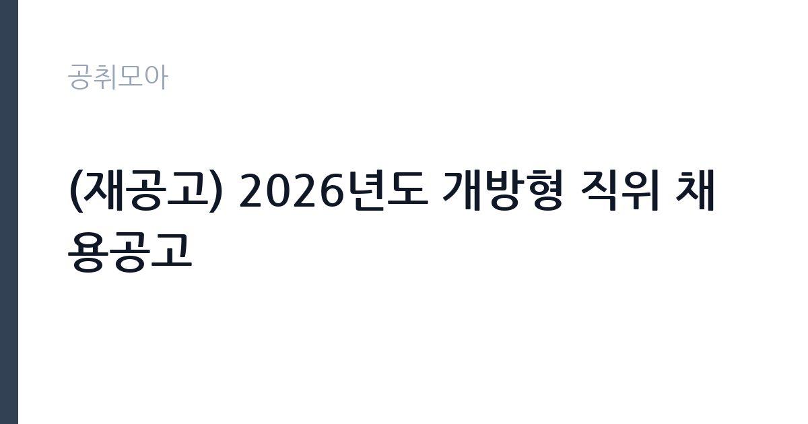

[공공기관] (재공고) 2026년도 개방형 직위 채용공고
한국전력기술(주) · 경북 · 마감 2026-11-05 (D-15) · 출처 나라일터

한눈에 보는 모집 조건
| 기관 | 한국전력기술(주) |
|---|---|
| 공고명 | (재공고) 2026년도 개방형 직위 채용공고 |
| 고용형태 | 임기제 |
| 근무지 | 경북 |
| 게시일 | 2026-10-21 |
| 마감일 | 2026-11-05 (D-15) |
지원자격, 이렇게 읽으세요
- 2직급 팀장 대우 1명
- 접수 ~2026-11-05 마감
- 세부 조건은 원문 공고문 확인
공고문의 응시자격은 짧게 쓰여 있지만 실제로는 세 가지를 봅니다. 첫째 결격사유 해당 여부, 둘째 자격·경력의 직무 연관성, 셋째 근무 시작 가능일입니다. 셋 중 하나라도 애매하면 원문 공고문의 세부 조항을 먼저 확인하고 지원서를 쓰세요. 특히 한국전력기술(주) 공고는 임기제 전형이라 서류에서 직무 연관 키워드(공공기관)를 명시하는 게 유리합니다.
이 공고의 포인트
합격 가능성을 가르는 한 줄은 '2직급 팀장 대우 1명'입니다. 태그로 치면 ''에 해당하는 지원자가 유리한 구조입니다. 한국전력기술(주) 공고는 D-15이라 시간이 촉박하니, 해당자는 오늘 지원서를 열고 비해당자는 관련 공고로 눈을 돌리는 결단이 필요합니다.
전형은 어떻게 진행되나
대부분 서류심사 후 면접심사 순으로 진행됩니다. 서류에서는 지원서·자기소개서의 직무 적합성을 보고, 면접에서는 실무 이해도와 근무 지속 가능성을 봅니다. 마감일(2026-11-05) 직전에는 접속이 몰려 원서 접수가 막히는 경우가 있으니 최소 하루 전 제출을 권합니다. 제출 후에는 접수번호·수험표 출력 여부를 반드시 확인하세요.
원문에서 확인한 전형 방식
1. 채용인원 : 총 1명(상세 분야 붙임 참조) 2. 채용공고문 및 직무기술서 : 붙임 참조 3. 근무지역 : 본사(김천) 4. 접수기간 및 지원방법 ○ 공고기간 : 2026. 10. 21(수) ~ 2026. 11. 05(목) 오전까지 ○ 접수기간 : 2026. 10. 28(수) ~ 2026. 11. 05(목) 오전까지 ○ 지원방법 : 채용 홈페이지(https://kepco-enc.cairos.co.kr/kepco-enc-jobs)를 통한 온라인 지원 5. 응시자격 ○ \민간전담\ 직위로 공무원 · 공공기관 재직자(당사 포함) 또는 퇴직 후 3년 미만인 자 지원 불가 ○ 블라인드 채용 원칙 적용(만 60세 이상 지원 가능) ○ 인사규정 제8조(결격사유)에 해당하지 않는 자 (첨부1 참고) ○ 입사예정일에 근무가 가능한 자 ○ 현재 군 복무 중인 경우, 면접전형일 이전 전역 가능한 자 ○ 접수마감일 기준, 당사 정규직(무기계약직 포함) 재직자 지원 불가 ○ 학위별 취득 후 아래 유관 분야 경력 중 하나를 충족하는 자 - 학사 취득 후 유관 분야 20년 경력 - 석사 취득 후 유관 분야 18년 경력 - 박사 취득 후 유관 분야 15년 경력 6. 결격사유 : 당
위 내용은 한국전력기술(주) 원문 공고의 전형 항목을 그대로 옮긴 것입니다. 단계별 배수와 평가 요소가 적혀 있으니 본인 강점과 맞는 단계에 맞춰 준비 순서를 정하세요. 전형별 합격자 발표일도 원문에서 함께 확인하는 것이 좋습니다.
이런 분께 추천해요
- 경북 근무가 가능한 분 — 통근·거주 조건이 맞는지가 1순위입니다
- 임기제 전형을 찾는 분 — 공공기관 분야 관심자라면 우선 검토 대상입니다
- 마감(2026-11-05) 안에 서류를 낼 수 있는 분 — D-15이니 오늘 지원서 초안부터 잡으세요
지원 전 체크리스트
- 원문 공고문의 응시자격·결격사유 정독했는가
- 자격증·경력증명서 등 증빙 스캔 준비됐는가
- 마감일(2026-11-05) 전날까지 접수 가능한가
- 근무지(경북)·근무형태(임기제) 감당 가능한가
모집 일정과 제출 타이밍
이번 공고의 접수 기간은 2026-10-21부터 2026-11-05까지입니다. 남은 기간은 약 15일입니다. 서류 준비에 14일을 쓰고 마지막 하루는 접수·확인용으로 남겨두세요. 원서 접수는 시작일보다 마감일에 몰리는 구조라, 서버가 느려지는 마감 당일은 피하는 게 상책입니다. 권장 스케줄을 짜보면 첫째 날 공고문 정독과 지원자격 체크, 중간 날 자기소개서 작성과 증빙 준비, 마감 전날 접수 시스템 사전 입력입니다. 특히 한국전력기술(주) 채용은 마감 이후 추가 접수를 받지 않으니, 접수번호와 확인증 출력까지 마쳐야 비로소 지원 완료입니다.
직무 이해하기: 공공기관
공공기관 실무의 공통분모는 직무기술서와 성실성입니다. 채용 분야의 직무기술서를 내려받아 필요 역량을 자기소개서에 그대로 녹이세요. 공공 채용은 블라인드 전형이 많아 사진·학교·출신지를 가리는 대신 직무 연관 경험의 구체성이 당락을 가릅니다. 한국전력기술(주)의 이번 채용(임기제)도 같은 잣대로 보면 됩니다. 공고 제목에 적힌 분야명과 직무기술서의 필요역량을 나란히 놓고, 본인 경험에서 겹치는 키워드를 세 개 이상 뽑아보세요. 그 세 개가 자기소개서와 면접 답변의 뼈대가 됩니다.
자기소개서 작성 팁
자기소개서에서 평가자가 찾는 건 직무와의 연결고리입니다. 서두에 지원 분야(공공기관)를 택한 이유를 한 문장으로 밝히고, 이어서 수치로 증명되는 경험 두 가지를 구체적으로 서술하세요. 마무리는 입사 후 1년의 실행 계획으로 닫습니다. 한국전력기술(주) 지원자가 자주 놓치는 감점 포인트는 분야와 동떨어진 성장 배경 나열, 근거 없는 역량 주장, 마감일(2026-11-05) 착오입니다. 임기제 모집은 빠른 실무 적응이 관건이라 출근 가능 시점을 분명히 적는 것이 플러스가 됩니다.
면접 준비 포인트
면접 준비의 핵심은 자소서 방어와 기관 이해입니다. 적은 경험을 조리 있게 설명할 수 있어야 하고, 한국전력기술(주)이 무슨 일을 하는 기관인지 한 가지 사업이라도 말할 수 있어야 합니다. 지원 분야(공공기관) 지식과 연결 지으면 점수가 오릅니다. 끝인사에서는 근무지(경북)·임기제 조건을 수용한다는 의사를 분명히 하세요. 일찍 도착해 여유를 갖고, 두괄식으로 답하는 지원자가 좋은 인상을 남깁니다.
급여·근무조건 읽는 법
공고문의 보수 표기는 호봉·수당·상여를 합친 기준이 아니라 기본급 기준인 경우가 많습니다. 실제 수령액은 원문의 보수·복무 조항과 동일 기관 재직자 채용 후기를 함께 봐야 가늠이 됩니다. 임기제 공고라면 계약 기간, 연장·전환 조건, 4대 보험과 퇴직금 적용 여부를 원문에서 반드시 확인하세요. 근무지(경북)가 도서·산간이거나 교대 근무가 포함된 경우에는 주거 지원·통근버스 조항도 체크리스트에 넣으세요.
자주 묻는 질문
- 경쟁률은 어느 정도로 예상되나요?
인기 기관·경북 근무 공고는 서류 경쟁률이 10대 1을 넘는 일이 흔합니다. 다만 '' 같은 조건부 전형은 실질 경쟁률이 낮아지는 경우가 많으니, 본인 조건에 맞는 공고를 고르는 것 자체가 전략입니다. - 합격자 발표는 어디서 확인하나요?
한국전력기술(주) 홈페이지 채용 게시판과 지원 시 등록한 문자·이메일로 안내됩니다. 발표일에는 접속이 폭주하니 접수번호를 미리 메모해 두세요. 예비합격자 운영 여부도 원문에서 함께 확인하는 것이 좋습니다. - 불합격하면 다음 기회는 언제인가요?
공공기관은 상·하반기 정기 채용과 수시·추가 모집이 반복됩니다. 이번 마감일(2026-11-05)을 놓쳐도 같은 기관의 다음 회차가 열리니, 공취모아의 공공기관 탭을 구독하듯 수시로 확인하세요.
함께 보면 좋은 공고
[공공기관] 2026년 공무직(본사 미화) 공개채용 공고 — 마감 2026-11-05[공공기관] [치악산] 2026년도 치악산사무소 기간제(환경관리) 직원 채용 공고 — 마감 2026-10-26[공공기관] (재)강남복지재단 직원(5급, 계약직,육아휴직대체) 채용 모집 재공고 — 마감 2026-11-05출처: 나라일터 공개정보를 바탕으로 공취모아가 정리한 안내글입니다. 모집 조건·일정은 변경될 수 있으니 지원 전 반드시 원문 공고문을 확인하세요. 본 글은 정보 제공용이며 합격을 보장하지 않습니다.